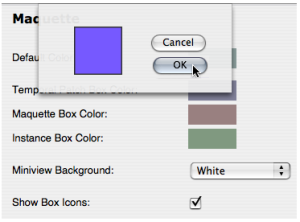
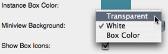

OpenMusic DocumentationHiérarchie de section : OM 6.6 User Manual > Maquettes > TemporalBoxes > Temporalboxes Appearance
OpenMusic DocumentationHiérarchie de section : OM 6.6 User Manual > Maquettes > TemporalBoxes > Temporalboxes Appearance
Navigation : page précédente | page suivante
Attention, votre navigateur ne supporte pas le javascript ou celui-ci à été désactivé. Certaines fonctionnalités de ce guide sont restreintes.
Temporalboxes Appearance
Miniview
The current value of a TemporalBox can be visualized with the miniview. To display the miniview, select a box and press |
{kind=link}
Size Parameter
While the representation of this current value does not necessarily fit the size of the TemporalBox, the size itself can be significant to the maquette's program.
Default Appearance of TemporalBoxes and Maquettes
To modify the default colour of TemporalBoxes :
go to the
Prefencesmenuselect the
Maquettetab.
These modification only apply to items created afterwards.
TemporalBoxes Default Colour

|
Click on the "Colour" icon of the corresponding box. |
Select |

|
Contextual Modifications
To modify the colour of a selected TemporalBox, press c and apply the same procedure.
TemporalBoxes Miniview and Icon

|
|
Modifying the Maquette Editor Appearance
Références :
Plan :
Navigation : page précédente | page suivante
A propos...(c) Ircam - Centre Pompidou